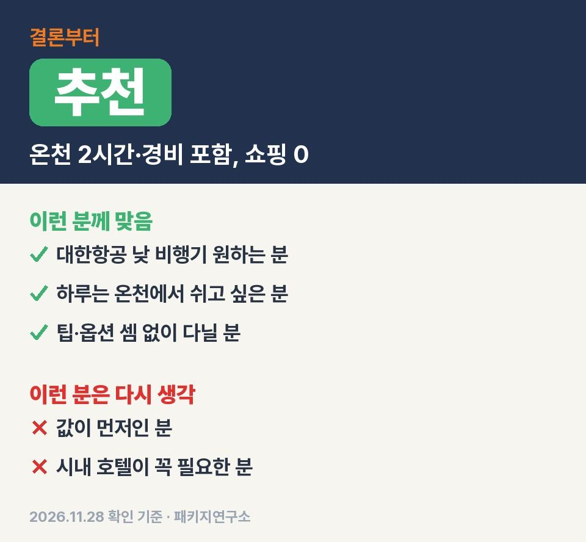
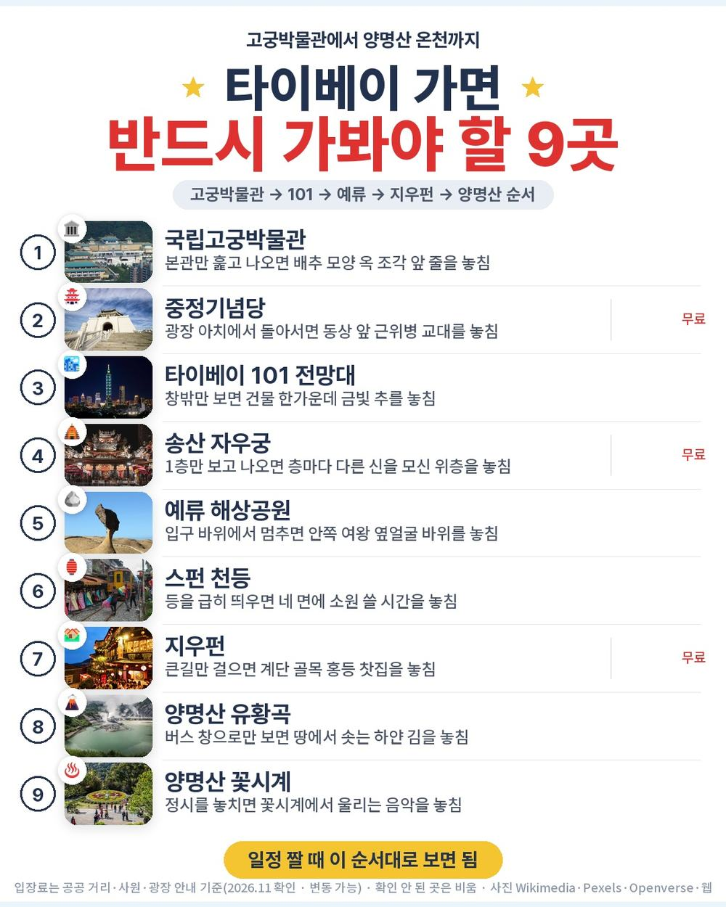
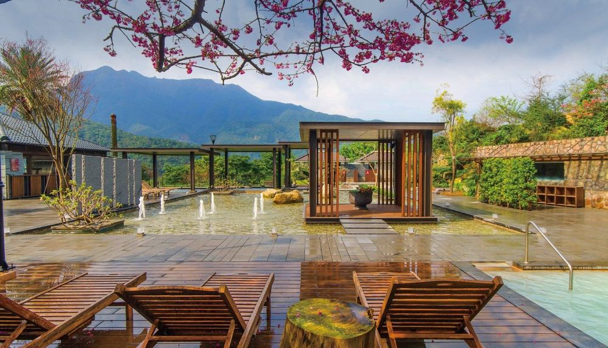
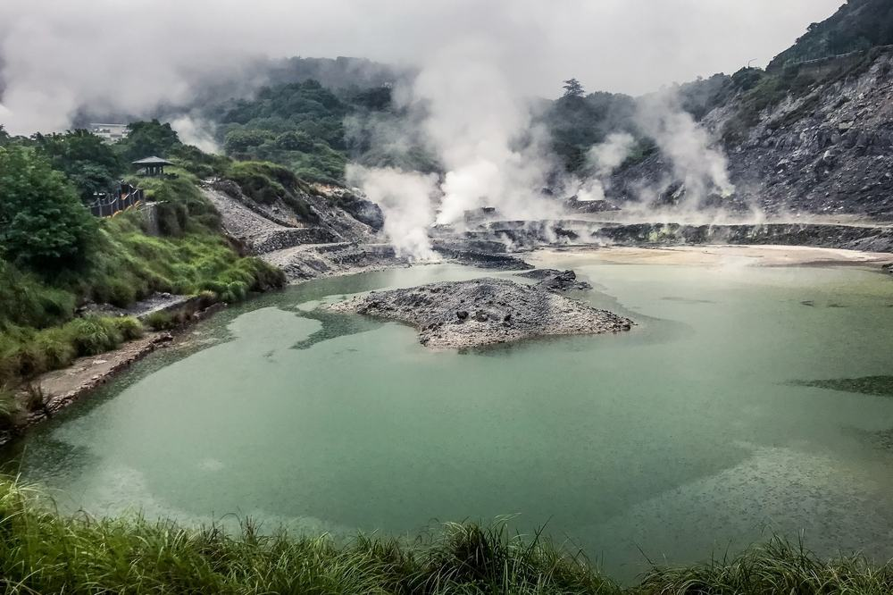

3일차 하루를 양명산 화산 골짜기와 티엔라이 리조트 노천온천에 통째로 쓰는 타이베이 3박 4일임. 비행기는 대한항공 직항이라 갈 때 올 때 기내식이 나옴.
다녀온 후기가 아니라 참좋은여행 일정표와 포함·불포함 원문을 줄마다 따져 본 글임.
결론 — 추천. 대한항공 직항 왕복, 시외 준특급 호텔 3박, 식사 9번, 101 전망대·스펀 천등·지우펀·발 마사지·양명산 온천 약 2시간에 가이드 경비까지 139만 9천원 안에 있고 쇼핑·선택관광은 0. 다만 값을 가장 먼저 보는 분은 같은 일정 제주항공편과 견줘 볼 것.

오늘 기준 출발일별 요금 보기
https://naver.me/xcgtVHyB

| 항목 | 내용 |
|---|---|
| 가격 | 1인 1,399,000원 (성인·소아 같음 · 12월 출발 기준) · 2인 2,798,000원 |
| 여행사 | 참좋은여행 |
| 항공 | 대한항공 직항 (KE2025·KE2026) · 갈 때 09:00 출발 약 3시간 / 올 때 12:25 출발 15:50 인천 |
| 숙소 | 시외 준특급 호텔 3박 (타오가든 또는 동급 예정 · 출발 2일 전까지 문자 안내) |
| 일정 | 3박 4일 · 식사 9번 · 쇼핑 0 · 선택관광 0 · 가이드·기사 경비 포함 |
▶ 내 출발일 오늘 기준 요금 확인 (제휴 링크 · 예약 시 수수료를 받으며 가격은 같습니다)
▶ 11월 28일 기준 타이베이 패키지 최저 69만 9,900원부터 — 출발일별 값 한 화면에: 비교 페이지
같은 일정, 제주항공 출발은 1인 114만 9천원임 (11월 28일 기준 · 출발일마다 다름).
| 번호 | 내용 | 한 줄 답 |
|---|---|---|
| 1 | 이 값에 들어 있는 것 | 온천 2시간·경비 포함 |
| 2 | 현장에서 더 낼 돈 | 마사지 팁 정도 |
| 3 | 일정과 체력 | 첫날 다섯 곳 |
| 4 | 자유여행으로 짜면 | 항공값 조회 실패 |
| 5 | 맞는 분 · 안 맞는 분 | 3 대 3 |
대한항공 왕복과 호텔 세 밤, 식사 9번에 양명산 온천과 가이드 경비까지 한 값으로 묶임.
- 항공: 대한항공 인천 2터미널–타오위안 직항 왕복, 유류할증료·제세공과금 포함, 기내식 2번
- 숙소: 시외 준특급 호텔 3박, 2인 1실 · 트윈이나 더블은 랜덤 배정
- 식사: 9번 — 현지식 위주에 2일차 저녁 한식, 호텔 조식 3번
- 관광: 국립고궁박물관, 중정기념당, 101빌딩 89층 전망대, 자우궁, 라오허제 야시장, 예류, 스펀, 지우펀, 양명산 유황곡·꽃시계·진애도화원, 시먼딩
- 덤: 티엔라이 리조트 노천온천 약 2시간, 스펀 천등 4인 1개, 2일차 발 마사지 30분, 망고빙수 2인 1개

원문 키포인트엔 101 전망대가 옵션가 US$35 상당, 발 마사지가 US$30 상당, 시먼딩 자유시간이 US$20 상당으로 적혀 있음. 노천온천까지 넣으면 다른 타이베이 상품보다 값이 높은 이유가 대충 보임.
꼭 내야 하는 돈은 0원이고 마사지 팁과 개인 간식값 정도만 남음.
| 항목 | 금액 | 필수/선택 | 비고 |
|---|---|---|---|
| 가이드·기사 경비 | 0원 | — | 상품가에 포함 (1인 US$40) |
| 선택관광 | 0원 | — | 없음 |
| 발 마사지 팁 | 직접 | 선택 | 원문에 금액 없음 · 마사지 자체는 포함 |
| 4일차 저녁 | 직접 | 선택 | 15시 50분 인천 도착 |
| 합계 (2인 필수분) | 0원 | 상품가 2인 2,798,000원 별도 |
- 혼자 쓰면 싱글룸 21만원이 붙음
- 온천은 수영복·수영모가 있어야 들어감 — 빌리는 값이 원문에 없으니 챙겨 가는 게 맘 편함
가장 바쁜 날은 내리자마자 다섯 곳을 도는 첫날이고 버스가 가장 긴 날은 2일차임.
| 일차 | 가는 곳 | 버스 | 걷기 | 점심 · 저녁 |
|---|---|---|---|---|
| DAY 1 | 인천 09:00 → 타오위안 11:00 → 고궁박물관 → 중정기념당 → 101 전망대 → 자우궁·라오허제 | 약 2시간 | 보통 | 현지식 · 현지식 |
| DAY 2 | 예류 → 스펀 천등 → 지우펀 → 발 마사지 | 약 3시간 | 중상 | 현지식 · 한식 |
| DAY 3 | 양명산 유황곡·꽃시계·진애도화원 → 티엔라이 노천온천 약 2시간 → 시먼딩 | 약 2시간 30분 | 보통 | 현지식 · 현지식 |
| DAY 4 | 호텔 조식 → 타오위안 12:25 → 인천 15:50 | 약 1시간 | 적음 | 기내식 · 없음 |
- 양명산 가는 길은 굽이가 많아 멀미가 잦은 분은 약을 미리 챙기는 게 좋음
- 지우펀은 계단 골목이라 위에서 아래로 내려오며 걷는 쪽이 편함
- 주말·연휴엔 지우펀 차량 통제로 시내버스(약 20분 이내)로 갈아탈 수 있음

걷는 2일차 밤에 발 마사지, 3일차 오후에 온천 2시간이 붙어 있어서 일정 사이사이 쉬는 틈이 있는 편임. 이 상품 게시판 후기에도 동선이 무리 없어 어르신 여행으로 맞았다는 말이 나옴.
이 상품 조건 한눈에 (출발일 달력·두 분 값·비슷한 상품과 비교)
https://pkg-lab.com/pkg/APP2165_KE1/?utm_source=ghpages&utm_medium=post&utm_campaign=daily
같은 목적지 다른 여행사 패키지, 쇼핑·선택관광·가이드 경비까지 비교
https://pkg-lab.com/dest/TPE/m/2026-12/?utm_source=ghpages&utm_medium=post&utm_campaign=daily
항공값을 오늘 조회하지 못해 합계는 내지 않고 직접 짤 때 따로 챙길 칸만 적음.
| 항목 | 금액 | 근거 |
|---|---|---|
| 인천–타이베이 직항 왕복 | 확인 못 함 | 2026-11-28 마이리얼트립 조회 실패 — 숫자를 지어내지 않음 |
| 호텔 3박 | 확인 못 함 | 날짜·호텔마다 다름 |
| 식사 | 따로 | 패키지는 9번 포함 |
| 공항 이동 | 따로 | 패키지는 버스 포함 |
| 101 전망대·천등·마사지·온천 | 따로 | 패키지는 포함 |
| 여행자보험 | 따로 | 패키지는 최대 1억 원 포함 |
| 가이드 | — | 자유여행은 없음 |
- 양명산 유황곡과 티엔라이 온천은 산속이라 대중교통으로 잇기가 번거로움
- 예류·스펀·지우펀까지 하루에 돌려면 택시나 투어를 따로 구해야 함
걸리는 건 값·외곽 호텔·산길 멀미이고 누구에게만 문제인지 분명함.
| 맞는 분 | 안 맞는 분 |
|---|---|
| 대한항공 낮 비행기·기내식을 원하는 분 | 값이 먼저인 분 (같은 일정 제주항공 114만 9천원) |
| 하루는 노천온천에서 쉬어 가고 싶은 분 | 호텔이 꼭 시내 한복판이어야 하는 분 |
| 팁·옵션·쇼핑 셈 없이 다니고 싶은 분 | 굽은 산길 버스 멀미가 심한 분 |
이 상품 게시판 후기엔 자연 속 온천에서 여독이 풀렸다는 말과 옵션·팁 강요가 없어 편했다는 말이 있음. 반대로 배정된 숙소 조식이 아쉬웠다는 글도 있어서, 호텔에 큰 기대보다는 일정 쪽에 무게를 두는 분께 맞는 상품이라고 봄.
Q. 타이베이 패키지 쇼핑 있나요?
A. 이 상품은 없음. 쇼핑센터를 한 번도 안 들르고 선택관광도 없음.
Q. 노쇼핑 상품이면 가이드 경비는 따로 내나요?
A. 안 냄. 기사·가이드 경비(1인 US$40)가 상품가에 포함임. 발 마사지 팁만 따로임.
Q. 온천에 뭘 챙겨 가야 하나요?
A. 수영복과 수영모가 필수임. 티엔라이 리조트에서 약 2시간 머묾.
산속 노천온천에서 쉬는 하루와 대한항공 직항이 이 값의 이유임.
낮 비행기로 편하게 오가며 부모님 쉬는 시간까지 챙기고 싶은 분께 잘 맞음.
출발일마다 값이 달라서 가시려는 날짜 요금부터 확인하시면 됨.
오늘 기준 출발일별 요금 보기
https://naver.me/xcgtVHyB
이 글에는 네이버 제휴 링크가 포함되어 있으며, 링크를 통해 예약하시면 일정 수수료를 받습니다. 가격은 동일합니다. 가격과 구성은 2026년 11월 28일 확인 기준이며 출발일에 따라 달라질 수 있습니다.
▶ 이 상품, 영상으로 보기 (유튜브)
▶ 타이베이 패키지 오늘 값 나란히 비교
▶ 같은 목적지 다른 여행사 패키지, 쇼핑·선택관광·가이드 경비까지 비교: pkg-lab.com